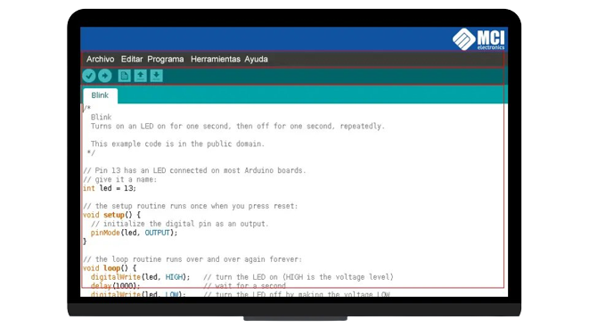

Para empezar a programar la placa Arduino es necesario descargar un IDE (Integrated Development Environment). El IDE es un conjunto de herramientas de software que permiten a los programadores desarrollar y grabar todo el código necesario para hacer que nuestro Arduino funcione como queramos. El IDE de Arduino nos permite escribir, depurar, editar y grabar nuestro programa (llamados “sketches” en el mundo Arduino) de una manera sumamente sencilla, en gran parte a esto se debe el éxito de Arduino, a su accesibilidad.
Para programar un Arduino, el lenguaje estándar es C++, aunque es posible programarlo en otros lenguajes. No es un C++ puro sino que es una adaptación que proveniente de avr-libc que provee de una librería de C de alta calidad para usar con GCC en los microcontroladores AVR de Atmel y muchas funciones específicas para los MCU AVR de Atmel.
Una vez instalado el IDE Arduino al iniciarlo no encontraremos con una ventana similar a esta.
Entorno de programación Arduino El área de trabajo puede ser dividida en 5 grandes partes. De arriba abajo son: la barra de menús, la barra de botones, el editor de código, la barra de consola de mensajes, y la barra de estado. La mayoría del tiempo estaremos trabajando en el editor de código, donde desarrollaremos nuestros proyectos.